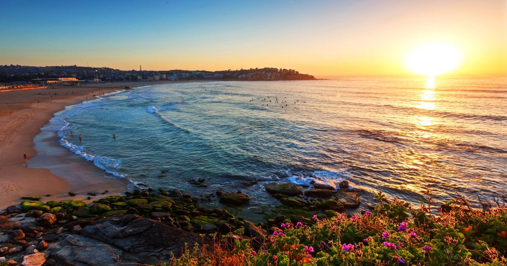

SYDNEY HARBOUR

BONDI BEACH

WESTFIELD CENTER


Sydney is Australia's largest and oldest city (established 1788). With over 4 million inhabitants, the Sydney metropolis is the largest and most influential of the two financial, transport, trade and cultural centers of Australia (the other being Melbourne).
For many, Sydney is the very symbol of Australia. Over 20% of Australia's residents live in Sydney, and over two thirds of all tourists who visit the country visit this city. Sydney is a significant global and national tourist destination and is often referred to as one of the most beautiful and vibrant cities in the world. Sydney hosted the 2000 Summer Olympics.
Sydney is also known for its beautiful beaches located close to the city, most famous are probably Bondi Beach and Manly Beach. Sydney is one of the world's most multicultural cities, which is reflected in its role as an important destination for immigrants arriving in Australia. Sydney is Australia's most expensive city to live in and ranks 21st among the most expensive cities in the world.
Many kinds of parties and festivals take place in Sydney. January 1 marks the summer with The Festival of Sydney. Then there are a lot of concerts, there is a lot of music in the streets, and there is racing on the sea. National Day Australia Day is celebrated on 26 January. The date represents the establishment of the colony of New South Wales at Sydney Cove after the ships of the First Fleet sailed into Port Jackson.